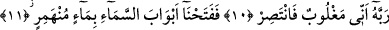
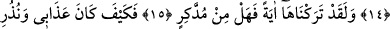
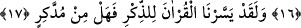

GEMİYİ BİR İBRET
OLARAK BIRAKTIK
9. Onlardan önce Nûh’un kavmi de yalanladı, hem de kulumuzun yalancı
olduğunda ısrar ederek: O, delirdi, dediler. Ve (Nûh, dâvetten vazgeçmeye) zorlandı.
10. Bunun üzerine, Rabbine: Ben yenik düştüm, bana yardım et! diyerek
yalvardı.
11. Biz de derhal nehir gibi devamlı akan bir su ile göğün kapılarını açtık.
12. Yeryüzünde kaynaklar fışkırttık. (Her iki) su, takdir edilmiş bir işin olması
için birleşmişti.
13. Nûh’u da tahtalardan yapılmış, çivilerle çakılmış gemiye bindirdik.
14. İnkâr edilmiş olana (Nûh’a) bir mükâfât olmak üzere gemi, gözlerimizin
önünde akıp gidiyordu.
15. Andolsun ki onu bir ibret olarak bıraktık, ibret alan yok mudur?
16. Benim azabım ve uyarılarım nasılmış!
17. Andolsun biz Kur’ân’ı öğüt alınsın diye kolaylaştırdık. (Ondan) öğüt alan yok
mu?
“Onlardan önce Nûh’un kavmi de yalanladı.” Ey Muhammed (s.a.) Nûh (a.s.)’un
kavmi de senin kavminden önce yalanlama işini yaptı. Yahut, Nûh (a.s.)’u yalanladılar,
demektir. Bu âyet-i kerîme, kötülükten alıkoyan ve Allah’a isyandan vaz geçmeyi
gerektiren ve Rasûlullah (s.a.)’i tesellî eden çok önemli bazı haberlerin başlangıcıdır.
“Kulumuzu (Nûh’u) yalanladılar”.
Âyet-i kerîme’nin bu bölümü, “Nûh Rabbine duâ edip dedi ki; Ey Rabbim!
şüphesiz oğlum da âilemdendir. Senin vaadinse elbette haktır. Sen Hâkimler
hâkimisin” (Hûd, 11/45) âyet-i kerîme’sinde Hûd (a.s.)’ın Rabbine nasıl duâ ettiğini
açıkladığı gibi birinci bölümde geçen yalanlama olayını açıklamaktadır. Her iki yerde
de yalanlanan birdir ve Nûh (a.s.)’dır. Yalanlama anlamındaki fiilin başına gelen “Fî”